Water Rescue Station “See Horse”
A timber rescue station on stilts, built to rise with the lake.
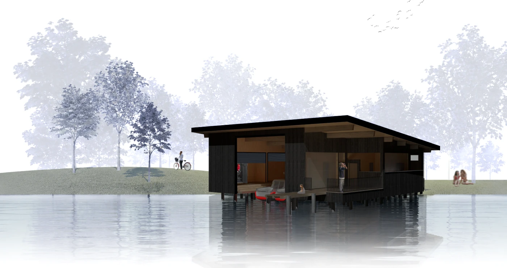
Project
The station stands in the shallow water on bored piles of reinforced concrete, so the floor stays dry when the lake rises. On top sits a glulam frame, closed with timber-frame walls.
The rooms form a U around the boat hall. Sliding doors connect the first-aid room to the hall and to the outside, barrier-free. Kitchenette and lounge open onto the terrace. The radio room looks out over the lido.
Outside, vertical cedar slats, charred (Shou Sugi Ban). Inside, the same rhythm in pale silver fir. Oak for the parquet, the terrace boards and the railings. The mono-pitch roof leaves its beams exposed.
Visualisations

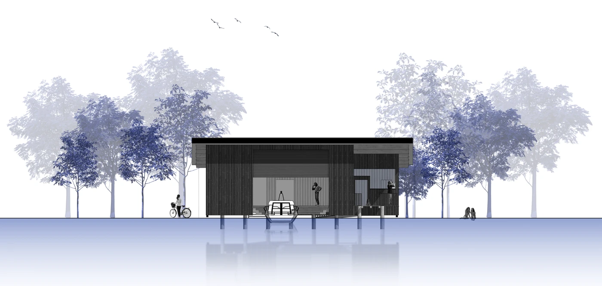

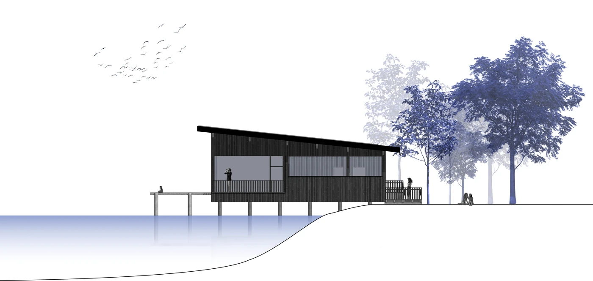

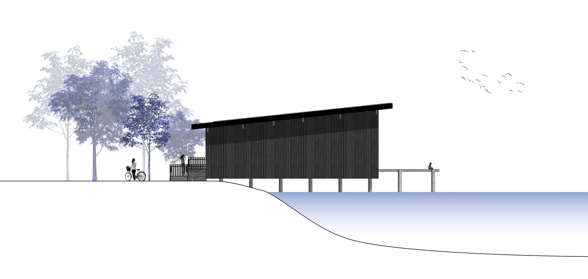

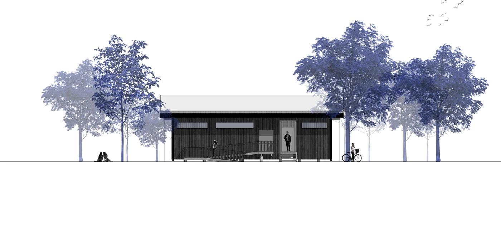
Floor plans


Sections

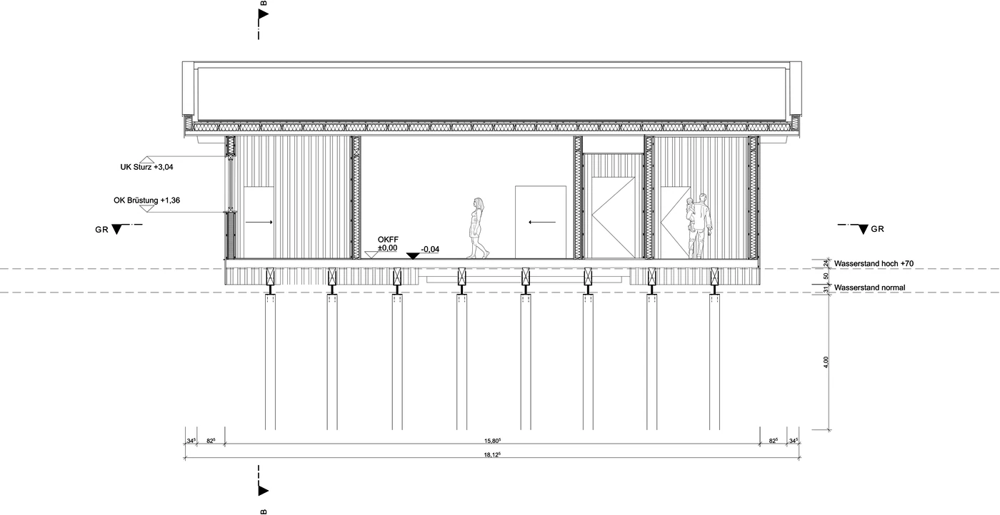
5 m
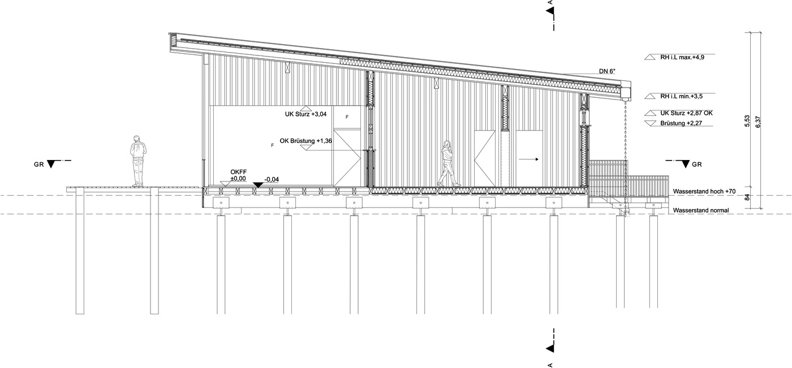
5 mDetails

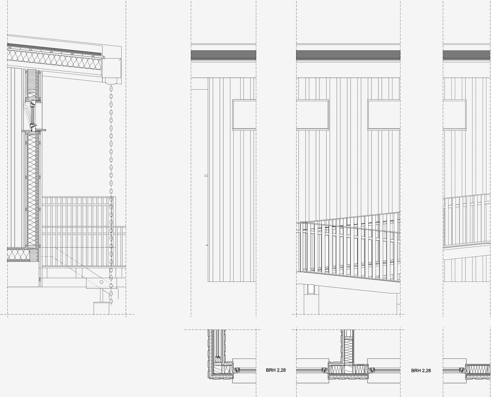
2 m
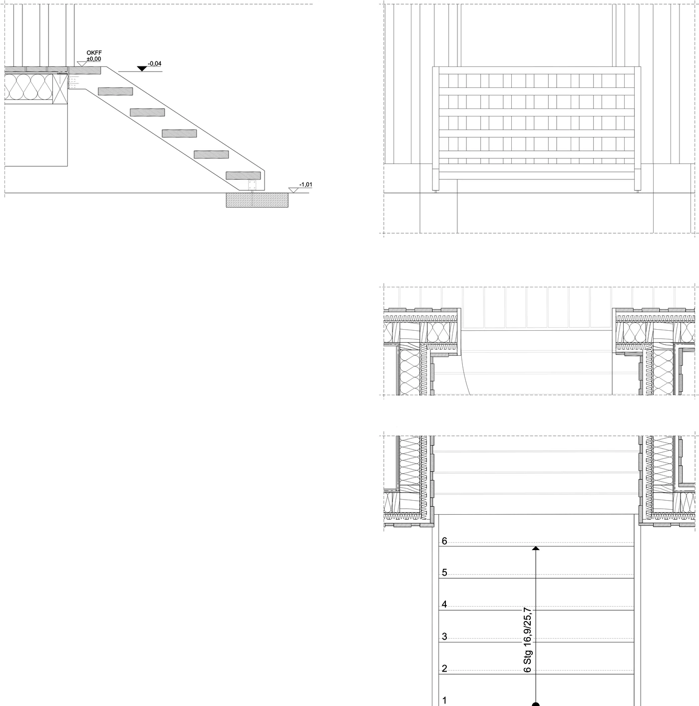
50 cmStructure

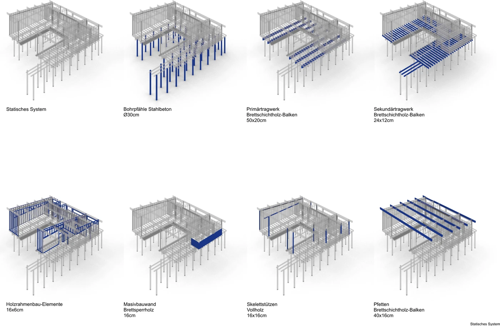

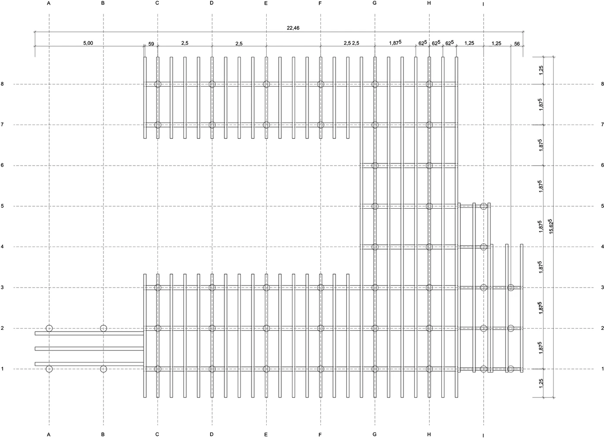
5 m